VINet: Visual and Inertial-based Terrain Classification and Adaptive Navigation over Unknown Terrain
Tianrui Guan, Ruitao Song, Zhixian Ye, Liangjun Zhang
한줄 요약 — VINet은 영상 외관과 주행 중 관성 반응을 함께 사용해 미지 지형을 가장 적합한 기지 지형 제어기로 대응시키고, 선택된 지형별 Gaussian-process 구동 모델을 NMPC에 연결한다. 소형 궤도 로봇에서 기지 지형 분류 98.37%, 미지 지형 분류 76.48%와 비적응 기준 대비 횡오차 RMSE 10.3% 개선을 보고했다.
1.연구 배경 및 동기
지형 이름보다 제어 성능을 예측하는 시각·관성 분류
야외 이동로봇은 콘크리트, 흙, 잔디, 자갈처럼 마찰과 변형 특성이 다른 표면을 연속해서 지난다. 같은 PWM 명령도 지형에 따라 실제 선속도와 각속도가 달라지므로 한 가지 운동 모델로 제어하면 추종 오차가 커진다. 특히 학습에 없던 지형을 단순히 unknown으로 거부하는 것만으로는 즉시 주행을 계속해야 하는 필드로봇의 제어 문제를 해결하지 못한다.
VINet은 미지 지형에 새로운 이름을 붙이는 대신, 이미 학습된 지형별 제어기 중 어느 것이 그 표면에서 가장 낮은 궤적 오차를 내는지를 분류 레이블로 삼는다. 전방 RGB patch가 제공하는 외관과 IMU·PWM 시퀀스가 제공하는 실제 차체 반응을 공유 임베딩에 정렬하고, 선택된 클래스에 대응하는 Gaussian-process 구동 모델을 비선형 모델예측제어에 사용한다.
이 설계는 terrain classification과 adaptive navigation을 한 평가 기준으로 묶는다. 저자들은 11개 지형을 모두 기지 클래스로 학습한 폐집합 조건과, 5개 기지 지형의 제어기를 6개 미지 지형에 대응시키는 조건을 나누어 분류 성능을 측정한다. 마지막으로 알려진 mulch·soil과 미지 artificial grass가 섞인 경로에서 고정 제어기와 적응 제어기의 횡방향 추종 오차를 비교한다.
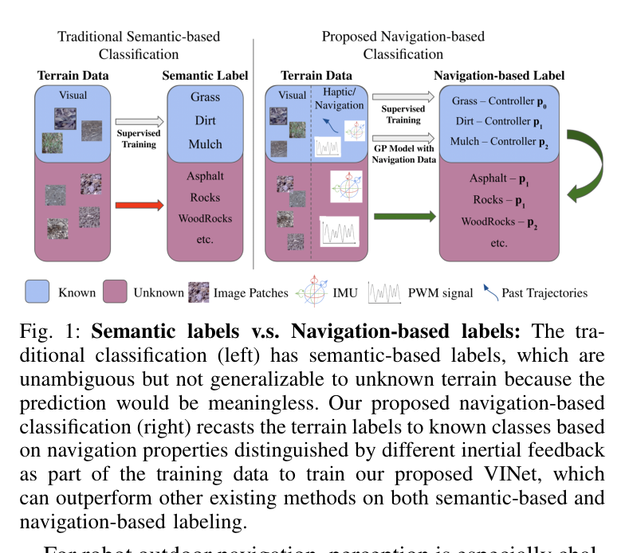
원문 Figure 1 · PDF p.1 — Fig. 1: Semantic labels v.s. Navigation-based labels: The tra- ditional classification (left) has semantic-based labels, which are unambiguous but not generalizable to unknown terrain because the prediction would be meaningless. Our proposed navigation-based classification (right) recasts the terrain labels to known classes based on navigation properties distinguished by different inertial feedback as part of the training data to train our proposed VINet, which can outperform other existing methods on both semantic-based and navigation-based labeling.
선행 연구의 한계
영상만 쓰는 지형 분류는 외관이 비슷하지만 마찰이 다른 표면을 구분하기 어렵고 조명 변화에 민감하다.
관성만 쓰는 방식은 로봇이 표면에 진입한 뒤에야 반응을 관측하므로 선행 예측이 늦다.
미지 지형을 의미 이름으로 강제 분류해도 어떤 기지 제어기가 가장 잘 작동할지는 직접 알 수 없다.
단일 운동 모델 기반 제어는 지형별 PWM-속도 관계 변화 때문에 횡오차와 자세 오차가 커질 수 있다.
이 연구의 기여
RGB와 IMU·PWM을 결합하는 multimodal terrain classification network VINet을 제안했다.
미지 지형의 레이블을 의미 유사도가 아니라 후보 제어기의 trajectory MSE로 정의하는 navigation-based labeling을 도입했다.
attention과 동적 특징 제거로 관성 시퀀스의 지형 관련 정보를 선택하고 영상 임베딩과 정렬했다.
지형별 Gaussian-process 구동 모델과 NMPC를 연결해 분류 향상이 실제 경로 추종 개선으로 이어짐을 실차에서 검증했다.
2.방법론 및 시스템 구성
VINet은 전방 카메라에서 로봇이 곧 밟을 128×128 RGB patch를 추출하고, 현재 구간의 6축 IMU와 모터 PWM 시퀀스를 함께 입력한다. 영상 branch는 ImageNet으로 사전학습한 EfficientNet-B0 특징을 저차원 임베딩으로 투영한다. 관성 branch는 가속도·각속도와 PWM을 묶은 시퀀스에 self-attention을 적용한 뒤, attention map의 대각 성분을 기준으로 지형 특징 기여가 낮은 동적 성분을 제거한다.
두 branch는 공유 차원의 표현으로 맞춰지고 학습 중 mean-squared error로 서로 가까워진다. 지형 분류에는 cross-entropy를 사용한다. 알려진 지형은 자기 클래스가 레이블이지만, 미지 지형은 각 기지 지형용 제어기를 실제로 적용했을 때의 trajectory MSE가 가장 작은 클래스를 레이블로 받는다. 추론된 클래스는 해당 지형에서 학습한 RBF-kernel Gaussian process를 선택하고, 이 모델이 NMPC의 선속도·각속도 명령을 좌우 궤도 PWM으로 변환한다.
처리 파이프라인
1
1. 내비게이션 기반 레이블 생성
기지 지형은 본래 클래스 번호를 사용한다. 미지 지형에서는 각 기지 지형 제어기를 같은 경로에 적용하고 trajectory MSE가 가장 낮은 제어기의 번호를 정답으로 정해, 분류 결과가 바로 제어기 선택으로 이어지게 한다.
2
2. 전방 지형 patch 추출
Logitech C920 영상에서 로봇 앞의 128×128 RGB patch를 잘라 아직 진입하지 않은 표면의 외관을 제공한다. 영상은 IMU 반응보다 먼저 지형 전환을 감지할 수 있다.
3
3. EfficientNet 영상 임베딩
EfficientNet-B0가 1280채널 7×7 특징을 만들고 linear, batch normalization, dropout을 거쳐 d차원 F_img로 압축한다. ImageNet 사전학습은 4,923장 규모 데이터에서 외관 표현의 초기화를 돕는다.
4
4. IMU·PWM 시퀀스 구성
30 Hz 6축 IMU의 가속도와 각속도에 m개 모터 PWM을 붙여 D×(6+m) 행렬 H를 만든다. PWM을 포함함으로써 관성 반응이 어떤 구동 입력에서 발생했는지를 함께 해석한다.
5
5. 관성 attention과 denoising
query, key, value 변환으로 attention map을 만들고, 대각 성분의 기여도를 정렬해 하위 동적 특징을 제거한다. 실험 설정은 D=60, 제거 비율 f_s=5/6으로 관성 시퀀스의 지형 관련 패턴을 남긴다.
6
6. 공유 임베딩 정렬
영상과 관성 branch의 출력을 같은 차원에 투영하고 채널별 학습 가중치로 결합한다. 두 특징 사이 MSE와 분류 cross-entropy를 함께 최적화해 외관과 차체 반응이 동일 지형 표현에 모이게 한다.
7
7. 기지 제어기 클래스 추론
softmax 출력에서 가장 높은 클래스를 선택한다. 미지 표면도 별도 unknown 상태로 남기지 않고, 실험적으로 추종오차가 가장 작았던 기지 제어기 중 하나에 대응된다.
8
8. 지형별 Gaussian-process 구동 모델
각 기지 지형에서 약 1,500쌍의 목표 속도 u와 PWM S를 수집해 RBF kernel GP를 학습한다. 이는 지형마다 다른 슬립과 구동 응답을 비모수적으로 근사한다.
미지 지형 i에서 후보 기지 제어기 p_x를 실행했을 때 trajectory MSE가 최소인 제어기 인덱스를 학습 레이블로 정한다.
관성 self-attention
IMU와 PWM 시퀀스 H의 시간·채널 관계를 attention으로 가중해 지형 반응 특징을 만든다.
다중모달 정렬 손실
영상 외관 임베딩과 관성 반응 임베딩을 같은 지형 표현으로 가깝게 만든다.
궤도차량 운동학
NMPC가 사용하는 평면 상태 x_c, y_c, theta와 제어 입력 v, omega의 관계다.
RBF Gaussian-process kernel
목표 속도와 PWM 사이의 지형별 비선형 구동 관계를 학습하는 GP의 커널이다.
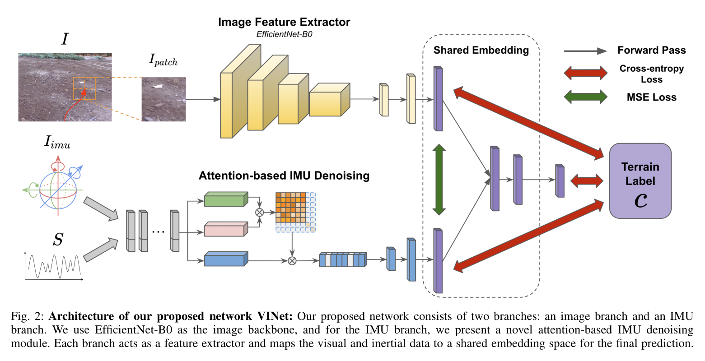
원문 Figure 2 · PDF p.3 — Fig. 2: Architecture of our proposed network VINet: Our proposed network consists of two branches: an image branch and an IMU branch. We use EfficientNet-B0 as the image backbone, and for the IMU branch, we present a novel attention-based IMU denoising module. Each branch acts as a feature extractor and maps the visual and inertial data to a shared embedding space for the final prediction.
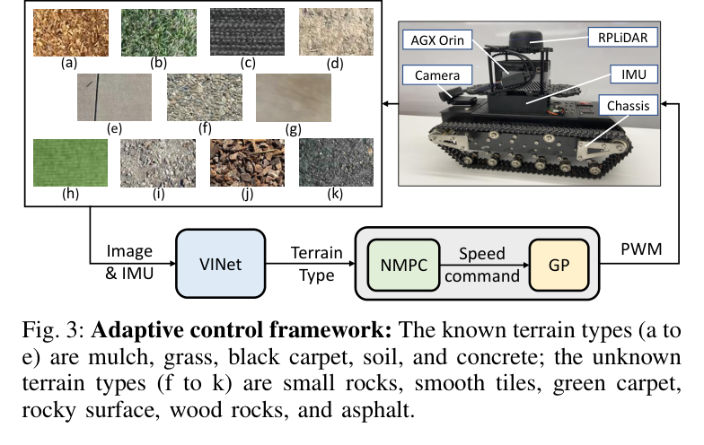
원문 Figure 3 · PDF p.4 — Fig. 3: Adaptive control framework: The known terrain types (a to e) are mulch, grass, black carpet, soil, and concrete; the unknown terrain types (f to k) are small rocks, smooth tiles, green carpet, rocky surface, wood rocks, and asphalt.
3.핵심 기술
제어 성능으로 정의한 미지 지형 유사도
VINet의 클래스는 반드시 물리적 재질 이름과 일치하지 않는다. 미지 표면을 콘크리트와 시각적으로 닮았다고 부르는 대신, 콘크리트용 GP와 제어기를 적용했을 때 가장 낮은 trajectory MSE가 나오면 그 클래스로 레이블한다. 따라서 분류의 정답이 곧 실행할 제어 정책의 선택이다.
이 방식은 새로운 표면마다 즉시 새 제어기를 학습하지 않고 기존 제어기 라이브러리에서 가장 유용한 항목을 재사용한다. 다만 모든 미지 지형을 기존 클래스 중 하나로 강제 배정하므로 어느 제어기도 안전하지 않은 경우를 거부하는 장치는 없다.
5개 기지 지형은 black carpet, concrete, grass, soil, mulch다.
6개 미지 지형은 green carpet, smooth tiles, rocky surface, wood rocks, asphalt, small rocks다.
레이블 생성에는 후보 제어기의 실제 trajectory MSE가 필요하다.
외관 예측과 접촉 반응의 상호 보완
영상 branch는 로봇이 표면에 닿기 전에 전환을 볼 수 있지만 빛과 색에 민감하다. IMU branch는 실제 슬립과 진동을 반영하지만 진입 이후의 정보다. 공유 임베딩은 두 신호가 일치하는 지형 표현을 배우고, 관성 attention은 PWM 조건을 포함해 동일 가속도라도 명령이 달랐던 경우를 구분한다.
영상 입력은 128×128 RGB patch다.
관성 입력은 30 Hz 6축 IMU와 PWM 시퀀스다.
사전학습 EfficientNet-B0와 256차원 공유 표현 조합이 최고 성능 설정에 포함된다.
attention 기반 관성 특징 정제
야외 주행의 IMU에는 지형 충격뿐 아니라 가감속, 회전, 센서 잡음이 섞인다. VINet은 attention map의 자기 관련 성분을 이용해 특징 중요도를 정렬하고 낮은 기여 성분을 제거한다. ablation에서는 사전학습, denoising, 공유 임베딩을 모두 사용한 구성이 미지 지형에서 가장 높은 0.7648 정확도를 보였다.
시퀀스 길이 D는 60이다.
특징 제거 비율 f_s는 5/6으로 설정됐다.
PWM을 IMU와 연결해 지형 반응과 입력 명령을 함께 모델링한다.
분류에서 NMPC까지 이어지는 적응 제어
각 기지 지형에서 학습한 GP는 목표 선속도·각속도를 실제 PWM으로 바꾸는 역 구동 모델 역할을 한다. NMPC는 동일한 궤도차량 운동학을 사용하지만, VINet이 선택한 지형에 따라 GP가 전환되므로 슬립과 구동 효율 차이를 PWM 수준에서 보상한다.
기지 지형마다 약 1,500개의 속도-PWM 쌍을 수집했다.
RBF kernel이 비선형 입력-구동 관계를 근사한다.
Jetson AGX Orin에서 분류와 적응 제어를 실행했다.
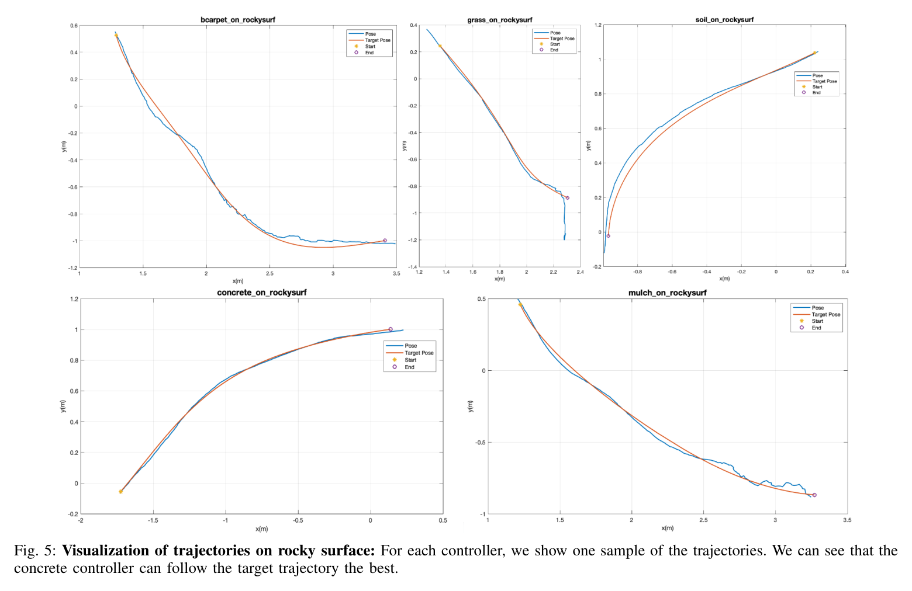
원문 Figure 5 · PDF p.7 — Fig. 5: Visualization of trajectories on rocky surface: For each controller, we show one sample of the trajectories. We can see that the concrete controller can follow the target trajectory the best.
4.실험 결과
실험 환경·장비·데이터
데이터셋은 1280×720 RGB 이미지 4,923장, 11개 지형 종류, 30 Hz IMU 기록으로 구성된다.
폐집합 실험은 11개 지형을 모두 기지 클래스로, 미지 지형 실험은 5개 기지와 6개 미지 지형으로 나눈다.
로봇은 390×270×145 mm 소형 궤도 플랫폼으로 궤도 폭 40 mm, 12 V 5 kg·cm DC 모터, 최대 적재 30 kg 사양이다.
추종 시험 경로에는 기지 mulch·soil과 미지 artificial grass 구간이 포함된다.
실험 프로토콜
Adam 학습률 0.0003, exponential decay 0.95, batch 128, 200 epochs 조건으로 RTX 2080 Ti에서 학습한다.
영상 patch 128×128, 관성 시퀀스 D=60, denoising 비율 5/6을 사용한다.
사전학습 유무, 임베딩 차원, 공유 표현, denoising 구성의 ablation을 수행한다.
미지 지형마다 5개 기지 제어기의 경로 MSE를 측정해 최저 오차 제어기를 정답 레이블로 만든다.
적응 VINet 제어와 단일 지형 모델을 고정한 기준 제어의 lateral RMSE를 같은 경로에서 비교한다.
비교 기준
visual-only 또는 IMU-only 계열을 포함한 기존 지형 분류 접근과 기지·미지 분류 정확도를 비교한다.
VINet의 pretraining, denoising, shared embedding 요소를 제거한 ablation과 비교한다.
추종 제어에서는 carpet 고정 모델과 mulch 고정 모델을 VINet 적응 모델과 비교한다.
평가 지표
11개 기지 지형 classification accuracy
6개 미지 지형 navigation-label classification accuracy
지형별 후보 제어기의 trajectory MSE
경로 추종 lateral root mean squared error와 비적응 기준 대비 개선율
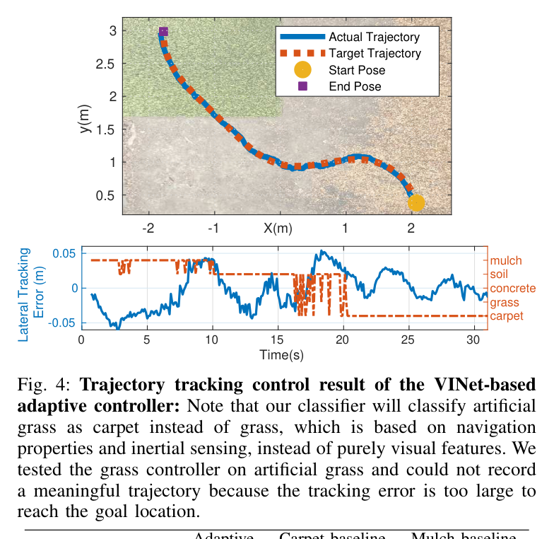
원문 Figure 4 · PDF p.6 — Fig. 4: Trajectory tracking control result of the VINet-based adaptive controller: Note that our classifier will classify artificial grass as carpet instead of grass, which is based on navigation properties and inertial sensing, instead of purely visual features. We tested the grass controller on artificial grass and could not record a meaningful trajectory because the tracking error is too large to reach the goal location.
핵심 결과 해석
11개 지형을 모두 기지 클래스로 학습한 조건에서 최고 분류 정확도는 98.37%였다. ImageNet 사전학습과 256차원 공유 임베딩을 사용한 설정이 높은 성능을 보였으며, 영상과 관성의 결합이 알려진 표면의 외관과 동역학 차이를 안정적으로 구분했다. 미지 지형 조건에서는 전체 구성의 정확도가 0.7648, 즉 76.48%로 가장 높았고 저자들이 비교한 선행법보다 8.51% 향상됐다.
미지 rocky surface의 navigation label을 만들기 위한 후보 제어기 RMSE는 concrete 0.032945, carpet 0.045516, soil 0.045092, mulch 0.066245, grass 0.175690이었다. 따라서 시각적 재질명이 아니라 실제 궤적 오차가 가장 낮은 concrete 제어기가 정답이 된다. 이 사례는 미지 지형을 기존 정책에 대응시키는 논문의 목적을 구체적으로 보여준다.
혼합 지형 추종에서 VINet 적응 제어의 lateral RMSE는 0.026 m였다. carpet 모델 고정은 0.050 m, mulch 모델 고정은 0.029 m였으며, 논문은 비적응 기준 대비 10.3% 개선을 보고한다. artificial grass에서 grass 제어기를 사용한 경우에는 오차가 너무 커 의미 있는 궤적을 기록하지 못해, 외관상 유사한 이름이 제어 적합성을 보장하지 않음을 드러냈다.
정량 결과
평가 항목
정량 결과
조건·맥락
원문 근거
11개 기지 지형 분류 정확도
98.37%
사전학습과 256차원 공유 임베딩을 사용한 최고 설정
PDF p.6
6개 미지 지형 분류 정확도
76.48%
pretraining, 8차원 출력 설정, 256차원 공유 표현과 전체 모듈 사용
PDF p.5
미지 지형 성능 향상
8.51%
저자들이 비교한 선행 분류법 대비 정확도 향상
PDF p.1
VINet 적응 제어 lateral RMSE
0.026 m
mulch, soil, artificial grass가 포함된 실차 경로 추종
PDF p.6
carpet 고정 제어 lateral RMSE
0.050 m
동일 혼합 지형 경로의 비적응 기준
PDF p.6
rocky surface 최적 후보 제어기 RMSE
0.032945
concrete 제어기가 5개 후보 중 최소 trajectory MSE 기록
PDF p.7
실패 사례와 경계조건
artificial grass에 이름이 같은 grass 제어기를 적용하면 오차가 너무 커 의미 있는 궤적을 기록하지 못했다.
VINet은 미지 표면을 기지 제어기 중 하나로 강제 선택하므로 모든 후보가 위험한 완전한 out-of-distribution 상황을 거부하지 못한다.
관성 특징은 로봇이 새 지형에 진입한 뒤에야 충분히 나타나므로 짧은 전환 구간에서는 영상 branch에 더 크게 의존한다.
단일 주행에서 여러 종류의 미지 지형이 연속 등장하는 복잡한 조건은 충분히 시험하지 않았다.
소형 궤도 로봇에서 얻은 구동 응답과 분류 성능은 대형 필드로봇의 질량·관성·슬립으로 직접 일반화되지 않는다.
5.한계 및 향후 연구
현재 한계
미지 지형도 5개 기지 제어기 중 하나로 분류하는 폐집합 구조여서 안전한 제어기가 없는 상황을 탐지하는 open-set rejection이 없다.
IMU는 접촉 이후의 증거이므로 영상이 잘못 분류한 지형 전환의 첫 구간을 선제적으로 완전히 보상할 수 없다.
4,923장과 11개 지형은 다양한 날씨, 조도, 습도, 경사 조건을 대표하기에 제한적이다.
평가는 소형 궤도 플랫폼과 제한된 시험 장소에 집중되어 더 무거운 로봇과 고속 주행에서의 검증이 없다.
내비게이션 레이블 생성에는 미지 지형에서 모든 후보 제어기를 실제 실행해야 하므로 데이터 수집 비용과 위험이 따른다.
향후 연구
어느 기지 제어기도 신뢰할 수 없는 지형을 검출하고 정지·저속 탐색으로 전환하는 불확실성 기반 거부 기능이 필요하다.
단일 주행에서 여러 미지 지형이 연속되는 조건과 젖음·경사·적재 변화가 겹치는 조건을 평가해야 한다.
더 정교한 제어기와 온라인 구동 모델 갱신으로 기지 정책 라이브러리 밖의 표면에도 적응해야 한다.
traversability mapping과 장애물 회피를 결합해 지형 적응과 충돌 안전을 하나의 계획 문제로 다뤄야 한다.
대형 궤도차량과 다른 구동 구조에서 시각·관성 표현 및 GP 모델의 전이 가능성을 검증해야 한다.
6.한마디로 정리
핵심 방법은?
전방 RGB와 IMU·PWM 시퀀스를 공유 표현으로 정렬하고, 미지 지형을 trajectory MSE가 가장 낮은 기지 제어기에 대응시켜 지형별 GP-NMPC를 선택한다.
핵심 결과는?
기지 지형 98.37%, 미지 지형 76.48% 분류 정확도와 적응 제어 lateral RMSE 0.026 m를 달성해 분류를 실제 추종 개선으로 연결했다.
한계는?
강제 폐집합 선택, 접촉 후에 얻는 관성 증거, 작은 플랫폼·데이터셋, 후보 제어기 전수 실행이 필요한 레이블 생성은 안전한 현장 확장의 제약이다.
#환경인식#제어·MPC#시각 특징#IMU 시계열#교차모달 임베딩#적응형 제어기 선택
나의 의견 / 우리 연구와의 연관성
자율굴착기와 같은 궤도형 필드로봇도 마른 흙, 젖은 흙, 쇄석, 진흙을 오갈 때 동일한 유압·구동 명령이 다른 차체 반응을 만든다. VINet의 navigation-based label은 지형을 이름으로 분류하는 데서 멈추지 않고, 현재 표면에서 어떤 구동 모델과 제어기를 호출할지를 직접 결정하는 방식이다.
대형 굴착기에 적용하려면 IMU·구동압·궤도 속도 같은 신호로 표현을 다시 학습하고, 불확실성이 높을 때 정지하는 안전 계층을 추가해야 한다. TTM 같은 주행성 지도와 결합하면 경로 수준에서는 위험 지형을 피하고, 피할 수 없는 표면에서는 VINet 방식으로 구동 모델을 적응시키는 이중 구조가 가능하다.
미지 지형을 가장 잘 작동하는 기존 정책에 연결해 현장 정책 재사용 문제를 다룬다.
영상은 선행 관측, IMU는 접촉 반응이라는 서로 다른 시간 특성을 보완한다.
분류 정확도뿐 아니라 lateral RMSE로 실제 제어 이득을 평가한다.
대형 굴착기에서는 open-set 거부와 안전 속도 제한이 반드시 추가되어야 한다.
주행성 지도, 장애물 회피, 지형별 구동 적응을 결합하는 후속 연구의 모듈로 활용할 수 있다.
7.전체 그림·표
본문 핵심 위치에 배치하지 않은 원문 Figure와 Table을 원문 페이지 순서로 수록한다.
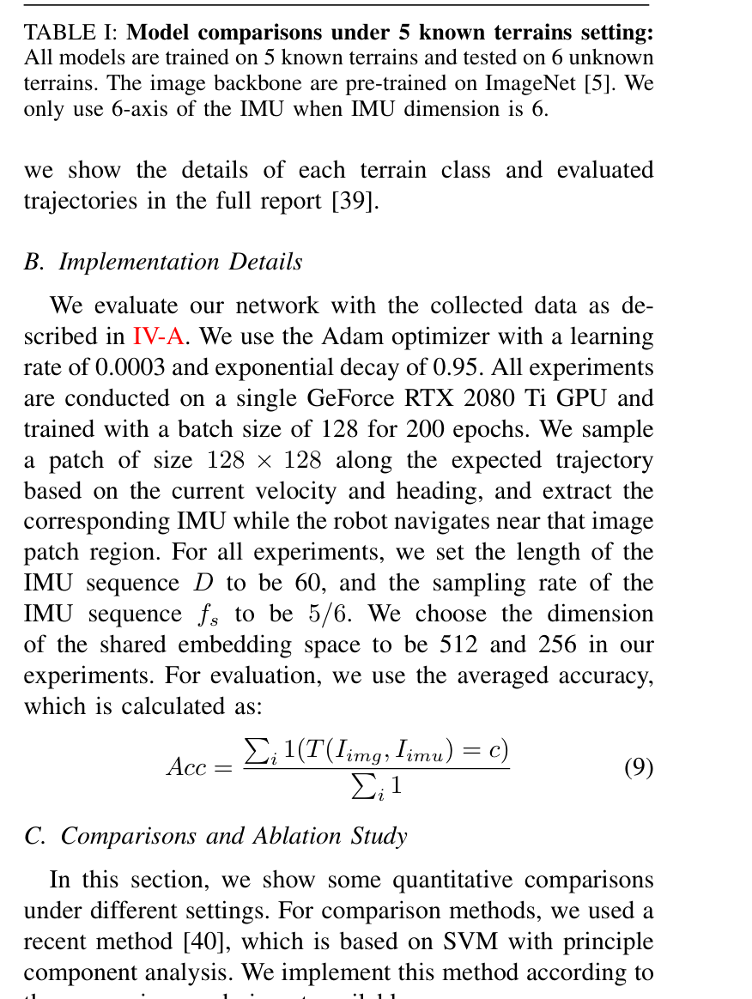
원문 Table I · PDF p.5 — TABLE I: Model comparisons under 5 known terrains setting: All models are trained on 5 known terrains and tested on 6 unknown terrains. The image backbone are pre-trained on ImageNet [5]. We only use 6-axis of the IMU when IMU dimension is 6.
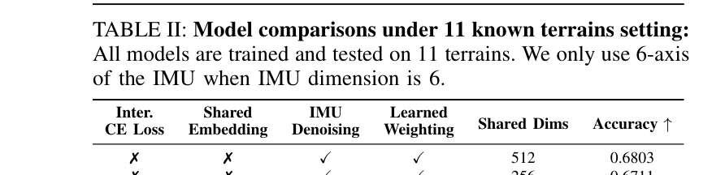
원문 Table II · PDF p.6 — TABLE II: Model comparisons under 11 known terrains setting: All models are trained and tested on 11 terrains. We only use 6-axis of the IMU when IMU dimension is 6.
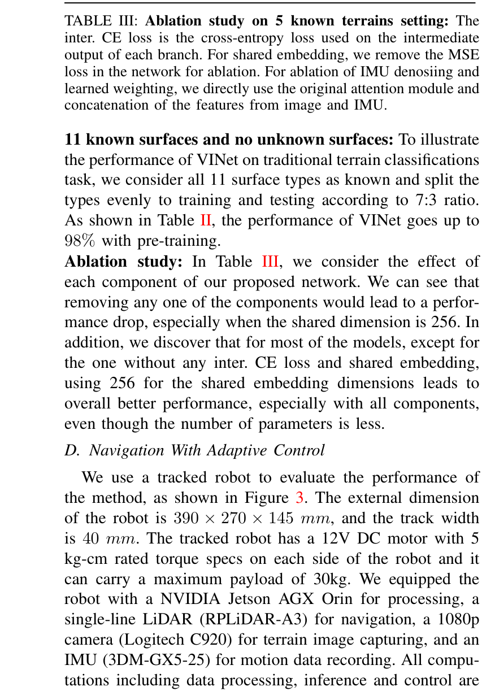
원문 Table III · PDF p.6 — TABLE III: Ablation study on 5 known terrains setting: The inter. CE loss is the cross-entropy loss used on the intermediate output of each branch. For shared embedding, we remove the MSE loss in the network for ablation. For ablation of IMU denosiing and learned weighting, we directly use the original attention module and concatenation of the features from image and IMU.
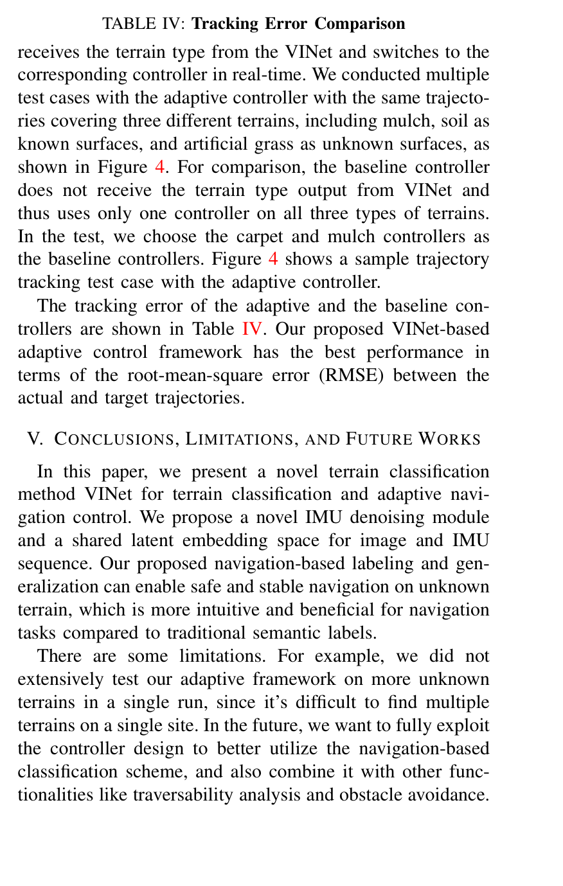
원문 Table IV · PDF p.6 — TABLE IV: Tracking Error Comparison receives the terrain type from the VINet and switches to the corresponding controller in real-time. We conducted multiple test cases with the adaptive controller with the same trajecto- ries covering three different terrains, including mulch, soil as known surfaces, and artificial grass as unknown surfaces, as shown in Figure 4. For comparison, the baseline controller does not receive the terrain type output from VINet and thus uses only one controller on all three types of terrains. In the test, we choose the carpet and mulch controllers as the baseline controllers. Figure 4 shows a sample trajectory tracking test case with the adaptive controller. The tracking error of the adaptive and the baseline con- trollers are shown in Table IV. Our proposed VINet-based adaptive control framework has the best performance in terms of the root-mean-square error (RMSE) between the actual and target trajectories.
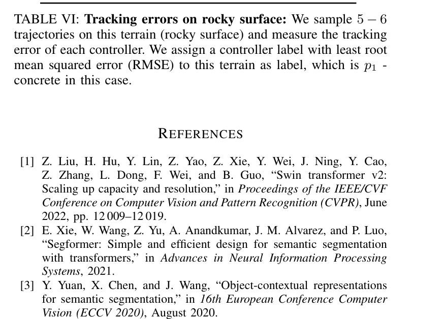
원문 Table VI · PDF p.7 — TABLE VI: Tracking errors on rocky surface: We sample 5 −6 trajectories on this terrain (rocky surface) and measure the tracking error of each controller. We assign a controller label with least root mean squared error (RMSE) to this terrain as label, which is p1 - concrete in this case.
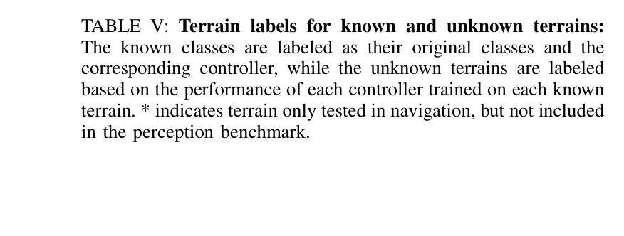
원문 Table V · PDF p.7 — TABLE V: Terrain labels for known and unknown terrains: The known classes are labeled as their original classes and the corresponding controller, while the unknown terrains are labeled based on the performance of each controller trained on each known terrain. * indicates terrain only tested in navigation, but not included in the perception benchmark.